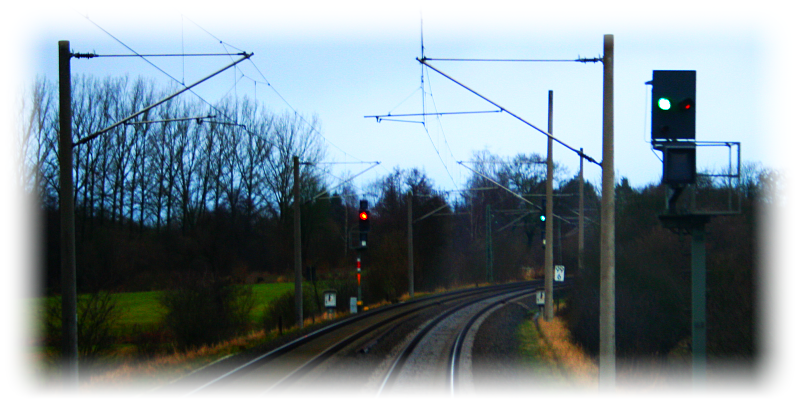

Signalbuch-Online
Kombinationssignale (Ks)
Übersicht und Bestimmungen zu den Kombinationssignalen der deutschen Eisenbahn.
Die Logik hinter den Bezeichnungen
Ks-Signale kombinieren die Aussagen von Haupt- und Vorsignal. Sie verraten dir also gleichzeitig, was jetzt gilt und was du am nächsten Signal zu erwarten hast.
Wenn du vor einem Signal anhalten musst, ist es in diesem Moment völlig egal, was das übernächste Signal zeigt. Deshalb kriegst du diese Information im Ks-Signalsystem nicht geliefert, erst wenn du losfährst, also erst, wenn dir ein Fahrtbegriff gezeigt wird.
Weil eine Info über das nächste Signal bei Halt also komplett entfällt, gibt es kein „Halt. Fahrt erwarten“ oder „Halt. Halt erwarten“. Und weil der Begriff für das reine Stehenbleiben in der Eisenbahnwelt seit geraumer Zeit Hp 0 heißt, hat sich diese Bezeichnung auch im Ks-Signalsystem gehalten. Wenn ein Ks-Signal Halt befiehlt, heißt der Begriff schlicht Hp 0.
Das bedeutet im Umkehrschluss: Ein echter Ks-Signalbegriff existiert überhaupt nur dann, wenn du aktuell Fahrt hast! Und da dir dein Signal immer auch direkt sagt, was als Nächstes blüht, bleiben exakt die folgenden zwei Fälle übrig:
- Ks 1: „Fahrt.“ (Aktuell Fahrt + am nächsten Signal ebenfalls Fahrt erwarten)
- Ks 2: „Halt erwarten.“ (Aktuell Fahrt + am nächsten Signal Halt erwarten)
Aber was ist mit Geschwindigkeitsbeschränkungen? Eine feste „Langsamfahrt“ (wie die 40 km/h beim Hp 2) gibt es als eigenen Ks-Signalbegriff nicht mehr. Geschwindigkeiten werden flexibel über Zusatzsignale geregelt: Eine weiße Ziffer überhalb des Signalbildschirm (Zs 3) zeigt die ab hier gültige Geschwindigkeit an. Eine gelbe Ziffer unten (Zs 3v) kündigt die Geschwindigkeit für das nächste Signal an.
Damit du eine Ankündigung rechtzeitig erkennst, blinkt das grüne Licht von Ks 1, sobald am selben Maste ein Zs 3v eine Geschwindigkeitsherabsetzung ankündigt. Zs 3 und Zs 3v sind dabei eigenständige Zusatzsignale, die auch in anderen Signalsystemen (wie dem Hv-System) genutzt werden.
